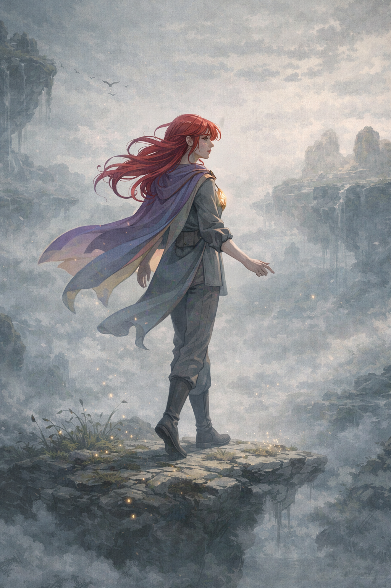

Gia moves slowly and deliberately, with confidence and control. Her gestures are smooth and intentional, almost like a character paused inside a comic panel.
She is observant, calm, and emotionally reserved. Her energy is quiet but powerful, creating a sense of balance, focus, and stability wherever she appears.
This page presents the Animation Assignment and shows how Gia’s movement reflects her personality.

Animation used to express Gia Vey’s calm and controlled movement.